sector50 supernovae (24 total)
Each figure has three panels. The top panel shows the transient light curve, the middle panel shows the local background (estimated in an annulus), and the bottom panel shows a "background-model corrected" light curve. Details about the background model are in the README.
The vertical red line marks the time of discovery reported to TNS. Other useful metadata from TNS is in the figure title.
Note that the top and bottom panel are in magnitudes, while the middle panel is in differential flux units. The magnitudes are calibrated to the flux in the reference image used for image subtraction. Thus, flux from the host galaxy is included in these magnitudes.
3-sigma upper limits are plotted as triangles with no errorbars. A typical limiting magnitude is 19.6 in 30 minutes or 18.4 in 200 seconds (for low backgrounds).
The links allow you to download the light curve data as a text file.
More details in the README.
2022hna 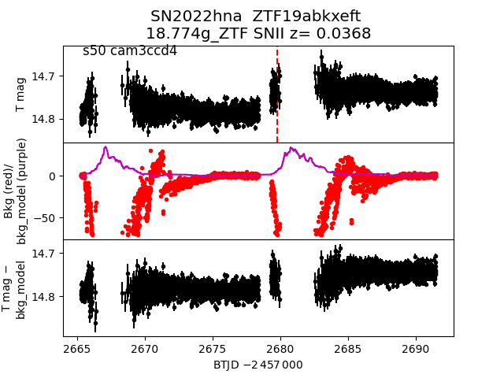 2022fks 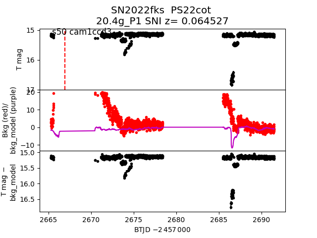 2022gcf 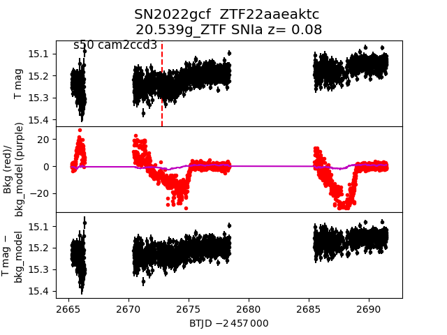 2022hdn 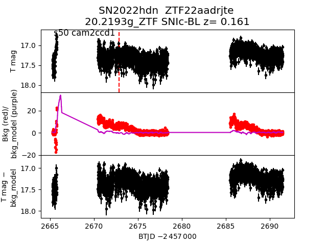 2022fue 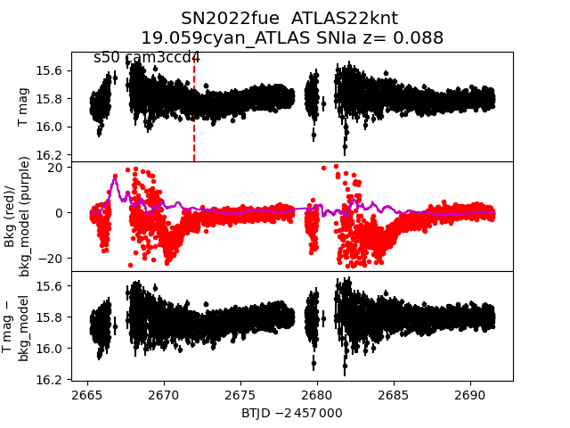 2022gjt 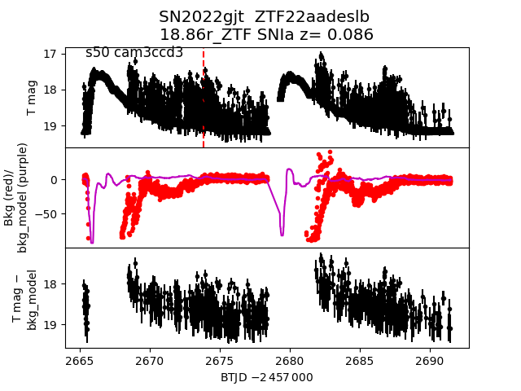 2022fjy 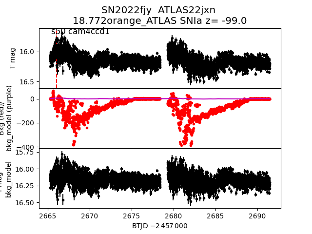 2022hox 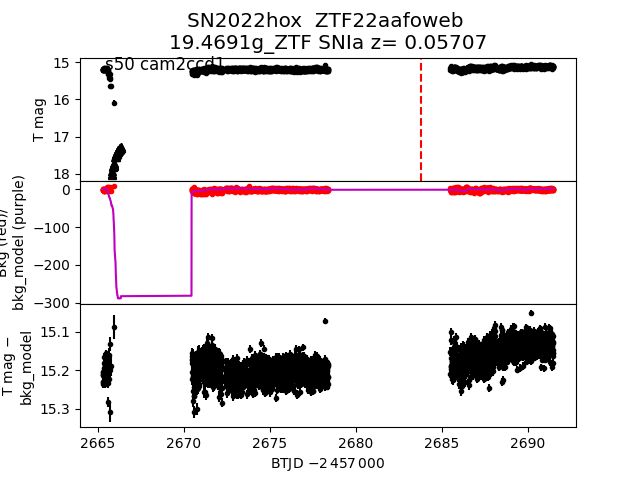 2022fly 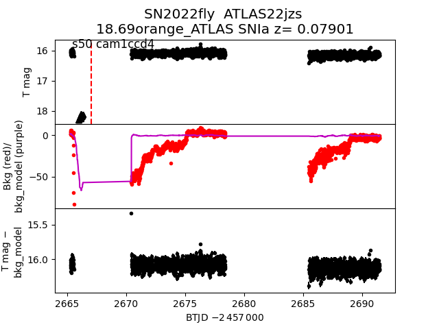 2022gtw 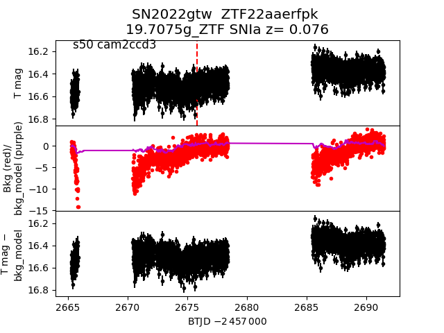 2022ihx 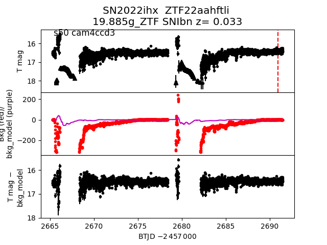 2022fou 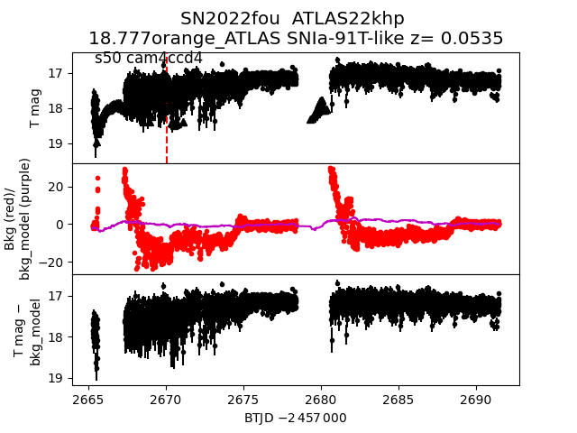 2022fny 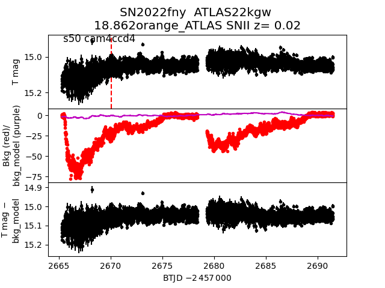 2022hql 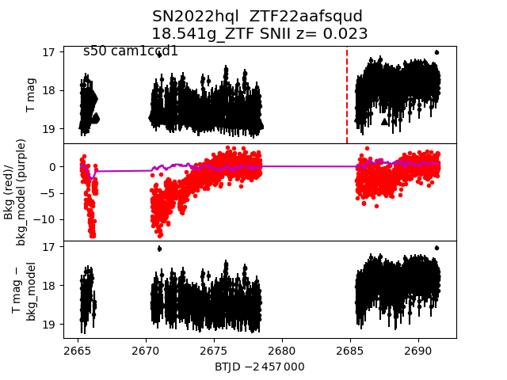 2022gbn 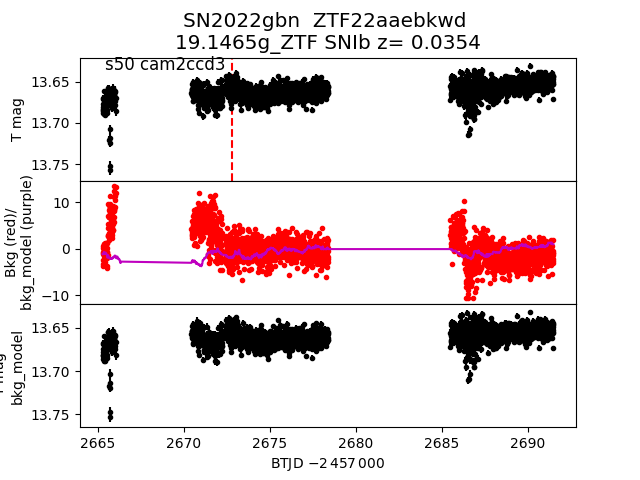 2022fud 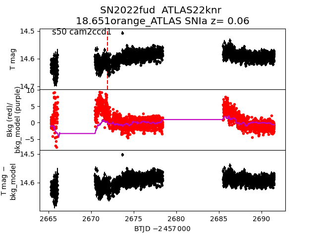 2022gdg 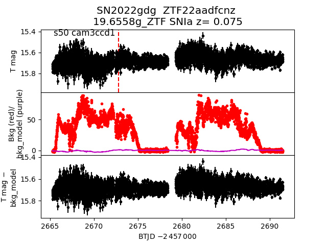 2022gjo 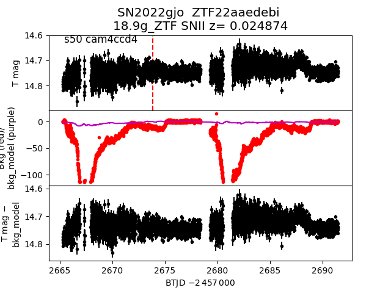 2022gyi 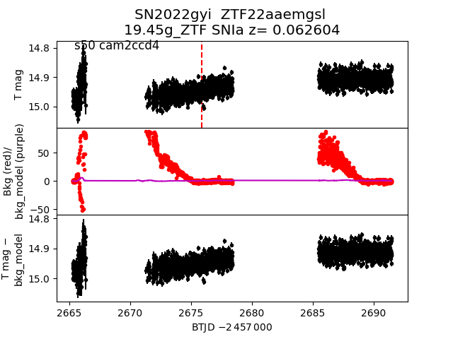 2022fpz 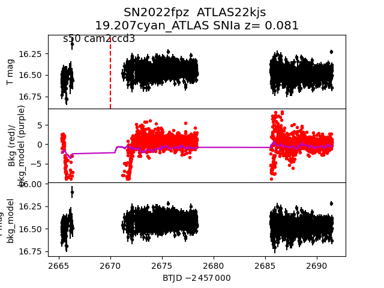 2022hgk 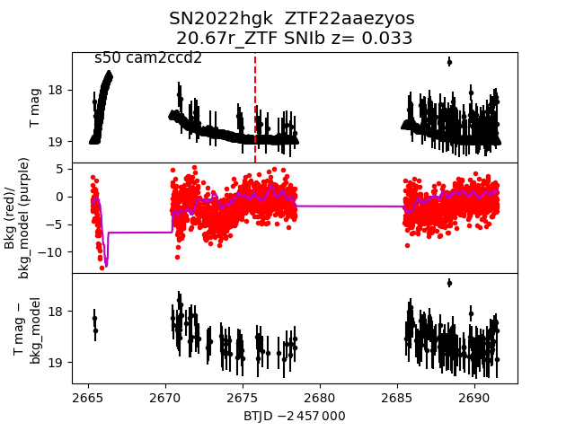 2022fps 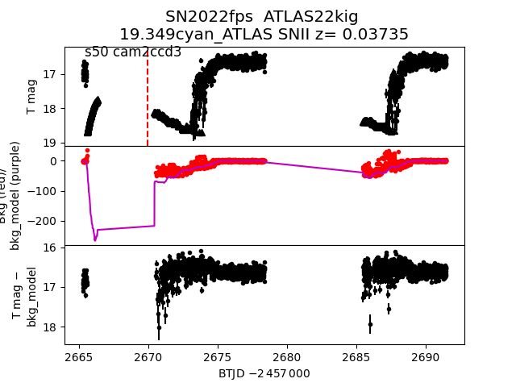 2022fnl 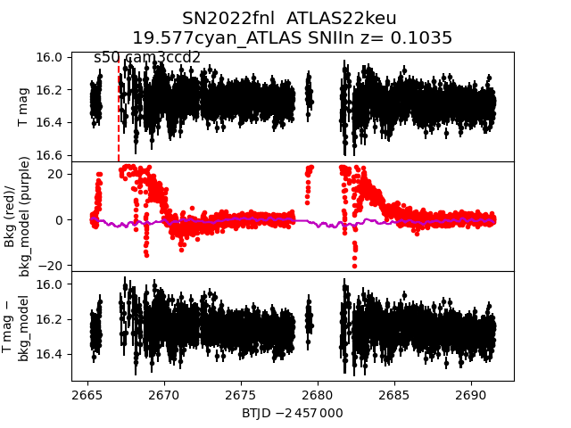 2022ihd 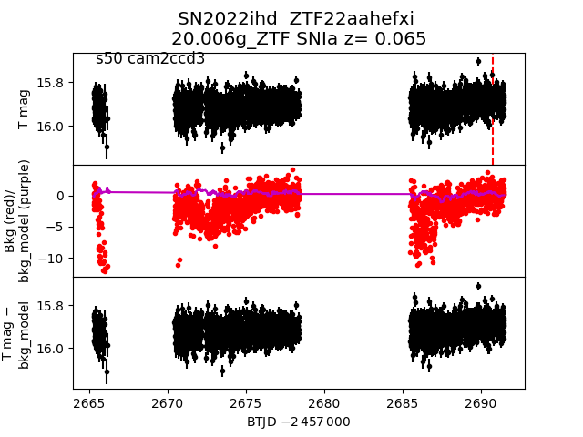